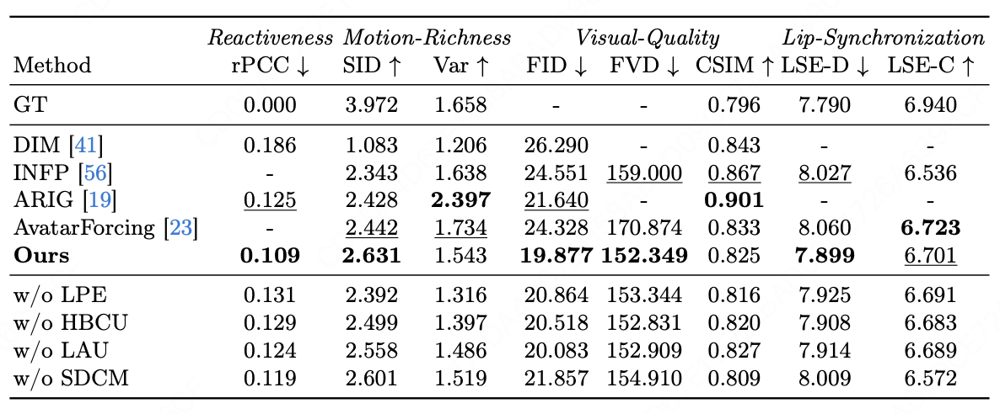

Experimental Results
Comparison with State-of-the-Art Approaches
We present video-based qualitative comparisons to comprehensively demonstrate our ECHO's advantages across diverse conversational contexts, encompassing seamless interaction, listening, and speaking scenarios on the RealTalk, HDTF and Seamless Interaction test datasets.
We present additional quantitative and qualitative comparisons on the core Interactive Head Generation (IHG) task, which comprehensively evaluates both speaking and listening capabilities under dyadic interactive settings.

Quantitative comparison with state-of-the-art IHG approaches. The results qualitatively showcase ECHO's superior performance in reactiveness, motion diversity, visual quality, and lip-synchronization under dyadic interaction settings.

Qualitative comparison with open-sourced SOTA methods on interactive head generation. Above two dyadic scenarios including active listening/speaking showcase that our proposed ECHO generates avatar head with more context-consistent and emotionally appropriate facial behaviors, and achieves lip articulation with better audio-visual alignment.
Ablation Study
To clearly attribute performance gains to individual designs, we report four component-level ablations and, for each, jointly analyze quantitative metrics and qualitative results. (a) Top-left: Ablation on low-level perception encoding (LPE) by leveraging long-range visual cues; (b) Bottom Left: Ablation on high-level behavior-grounded context understanding (HBCU); (c) Top-right: Ablation on SDCM module; (d) Bottom-right: Ablation on linguistic-driven affective understanding (LAU).